df <- data.frame(x = c(runif(20, min = 1, max = 15)), y = c(runif(20, min = 1, max = 15)))4 Correlación y Diseño Experimental
En este capítulo, aprenderá a cuantificar la fuerza de una relación lineal entre dos variables y explorará cómo las variables de confusión pueden afectar la relación entre otras dos variables. También verá cómo el diseño de un estudio puede influir en sus resultados, cambiar la forma en que se deben analizar los datos y afectar potencialmente la confiabilidad de sus conclusiones.
4.1 Correlación
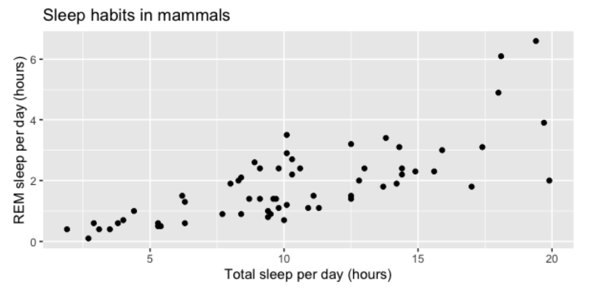
Hablemos de las relaciones entre las variables numéricas. Podemos visualizar este tipo de relaciones con diagramas de dispersión: en este diagrama de dispersión, podemos ver la relación entre la cantidad total de sueño que obtienen los mamíferos y la cantidad de sueño REM que obtienen.
la variable en el eje x se llama explicativa o independiente
y la variable en el eje y se llama respuesta o variable dependiente.
4.1.1 Coeficiente de correlación
También podemos examinar las relaciones entre dos variables numéricas usando un número llamado coeficiente de correlación. Este es un número entre -1 y 1, donde la magnitud corresponde a la fuerza de la relación entre las variables, y el signo, positivo o negativo, corresponde a la dirección de la relación.
4.1.2 Magnitud = fuerza de relación
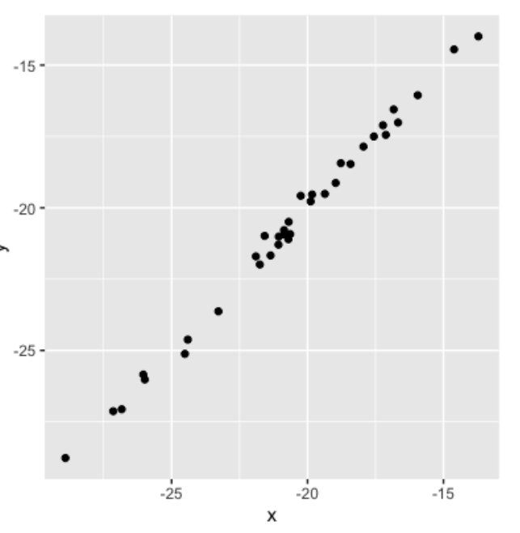
Aquí hay un diagrama de dispersión de 2 variables, x e y, que tienen un coeficiente de correlación de 0.99. Dado que los puntos de datos están muy agrupados alrededor de la línea, podemos describir esto como una relación casi perfecta o muy fuerte. Si sabemos que es x, tendremos una idea bastante fuerte de cuál podría ser el valor de y.
En la siguiente figura x e y tienen un coeficiente de correlación de 0.75, y los puntos de los datos están más dispersos.
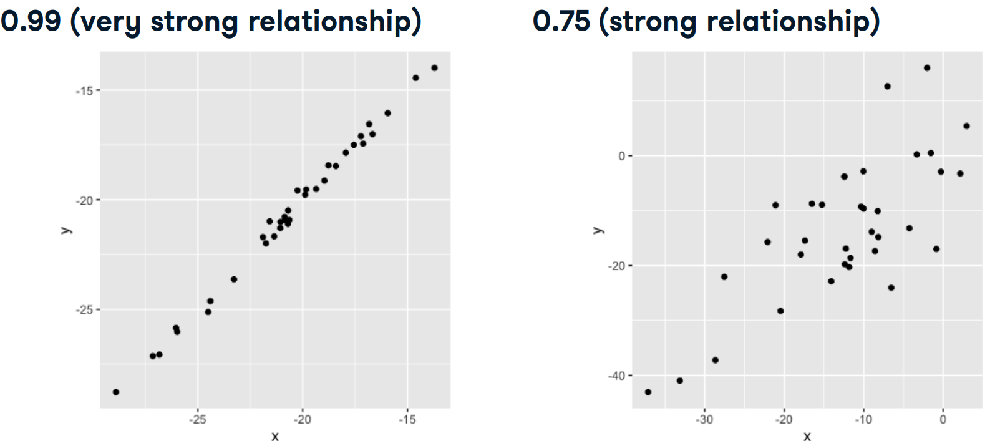
En este otro gráfico, x e y tiene una correlación de 0.56 y, por lo tanto, están moderadamente correlacionados.
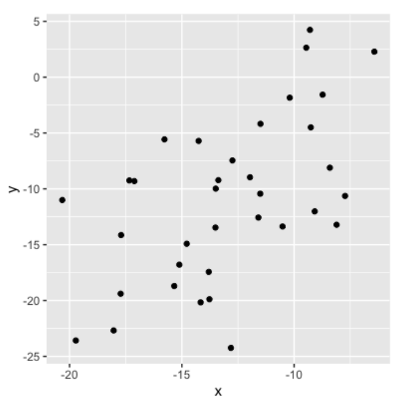
Un coeficiente de correlación alrededor de 0.2 se consideraría una relación débil.
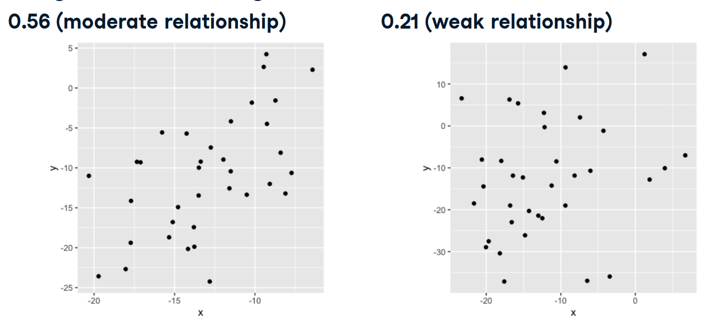
Cuando el coeficiente de correlación es cercano a 0, x e y no tienen relación y el diagrama de dispersión parece completamente aleatorio.
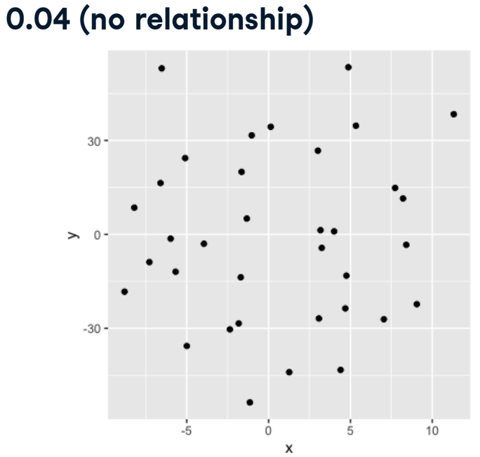
Esto significa que conocer el valor de x no nos dice nada sobre el valor de y.
4.1.3 Signo = Dirección
El signo de coeficiente de correlación corresponde a la dirección de la relación. Un coeficiente de correlación positivo indica que a medida que \(x\) aumenta, \(y\) tambien aumenta. Un coeficiente de correlación negativo indica que a medida que \(x\) aumenta, \(y\) disminuye.
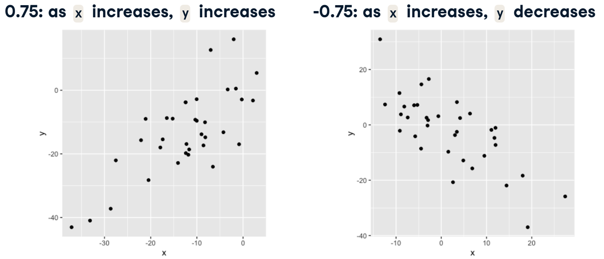
4.1.4 Visualizar relaciones en R
Para visualizar relaciones entre dos variables, podemos usar un diagrama de dispersión creado usando geom_point. Tal como se sigue.
library(ggplot2)
ggplot(df, aes(x, y)) +
geom_point()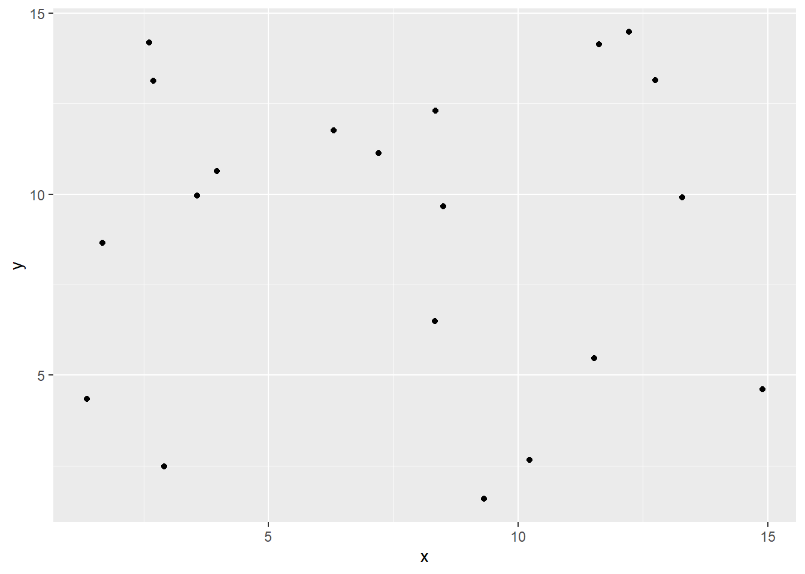
4.1.5 Agregar una línea de tendencia
Podemos agregar una línea de tendencia lineal al diagrama de dispersión usando geom_smooth del método en lm para indicar que queremos una linea de tendencia lineal y lo cambiaremos a FALSE para que no haya una margenes de error alrededor de la línea. Las líneas de tendencia como esta pueden ser útiles para ver más facilmente una relación entre dos variables.
ggplot(df, aes(x,y)) +
geom_point() +
geom_smooth(method = "lm", se = FALSE)`geom_smooth()` using formula = 'y ~ x'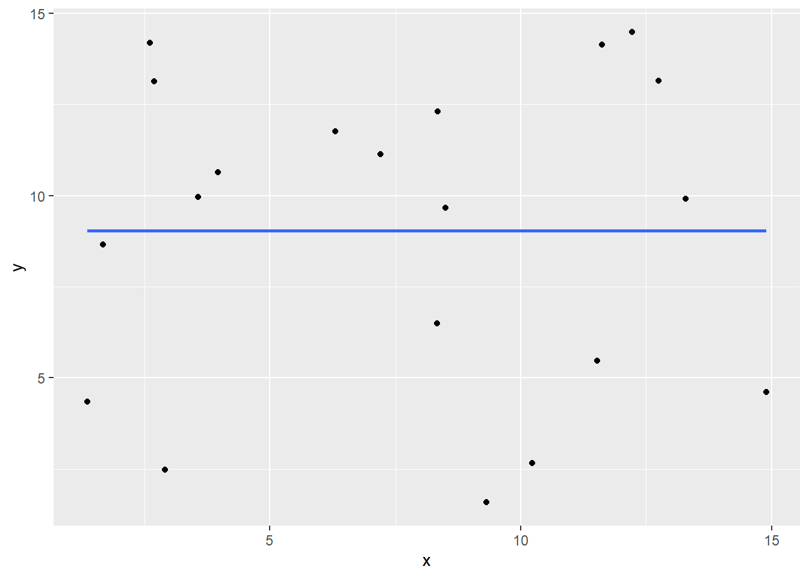
4.1.6 Computo de Correlación en R
Para calcular el coeficiente de correlación entre dos variables aleatorias en R, podemos utilizar la función cor(). La función cor() toma dos vectores numéricos y devolverá su coeficiente de correlación. Tenga en cuenta que no importa en qué orden se pasan los vectores a la función, ya que la correlación entre \(x\) e \(y\) es lo mismo que la correlación entre \(y\) e \(x\).
cor(df$x, df$y)[1] -0.0007910694cor(df$y, df$x)[1] -0.00079106944.1.7 Correlación con Valores NA
Si tiene valores faltantes en cualquiera de las variables, R devolverá NA como resultado de la correlación. Para ignorar los puntos de datos en los que faltan ambos valores, establezca el argumento use = "pairwise.complete.obs".
4.1.8 Muchas formas de calcular la correlación
Hay más de una forma de calcular la correlación, pero el método que hemos estado usando en esta sección se llama correlación producto momento de Pearson, que también se escribe como (\(r\)).
Esta es la medida de correlación más utilizada
Matemáticamente, se calcula utilizando esta fórmula
\[r = \sum_{i=1}^n \frac{(x_i - \bar{x})(y_i - \bar{y})}{\sigma_x \times \sigma_y}\] donde \(\bar{x}\) y \(\bar{y}\) son las medias de \(x\) e \(y\), y \(\sigma_x\), \(\sigma_y\) son las desviaciones estándar de \(x\) e \(y\).
No es importante memorizar la fórmula en sí, pero sepa que hay variaciones de esta fórmula que miden la correlación un poco diferente, como la tau de Kendall y la rho de Spearman, pero están fuera del alcance de este curso.
4.1.9 Ejercicio 20
En este capítulo trabajaremos con un conjunto de datos world_happiness que contiene los resultados del informe mundial de la felicidad de 2019. El informe califica a varios países en función de cuán felices son las personas en ese país.
También clasifica a cada país en varios aspectos sociales, como el apoyo social, la libertad, la corrupción y otros. El conjunto de datos también incluye el PIB per cápita y la esperanza de vida de cada país.
library(tidyverse)── Attaching core tidyverse packages ──────────────────────── tidyverse 2.0.0 ──
✔ dplyr 1.1.2 ✔ readr 2.1.4
✔ forcats 1.0.0 ✔ stringr 1.5.0
✔ lubridate 1.9.2 ✔ tibble 3.2.1
✔ purrr 1.0.1 ✔ tidyr 1.3.0
── Conflicts ────────────────────────────────────────── tidyverse_conflicts() ──
✖ dplyr::filter() masks stats::filter()
✖ dplyr::lag() masks stats::lag()
ℹ Use the conflicted package (<http://conflicted.r-lib.org/>) to force all conflicts to become errorsworld_happiness <- readRDS("world_happiness_sugar.rds")
head(world_happiness) country social_support freedom corruption generosity gdp_per_cap life_exp
1 Finland 2 5 4 47 42400 81.8
2 Denmark 4 6 3 22 48300 81.0
3 Norway 3 3 8 11 66300 82.6
4 Iceland 1 7 45 3 47900 83.0
5 Netherlands 15 19 12 7 50500 81.8
6 Switzerland 13 11 7 16 59000 84.3
happiness_score grams_sugar_per_day
1 155 86.8
2 154 152.0
3 153 120.0
4 152 132.0
5 151 122.0
6 150 166.0En este ejercicio, examinará la relación entre la esperanza de vida (life_exp) y la puntuación de felicidad (happiness_score) de un país, tanto visual como cuantitativamente.
Primero, creemos un diagrama de dispersión de
happiness_scorevslife_expusandoggplot2.ggplot(world_happiness, aes(life_exp, happiness_score))+ geom_point()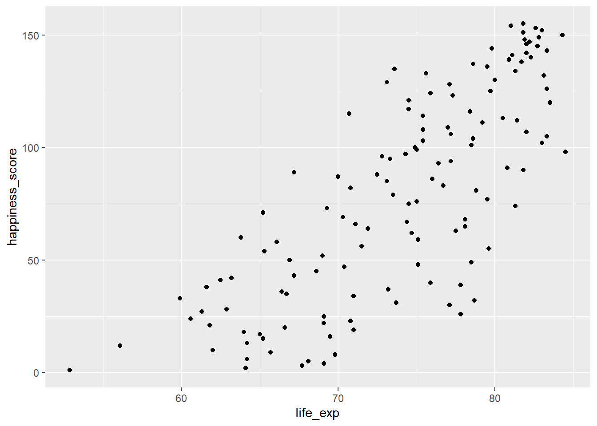
Agregamos una línea de tendencia lineal al diagrama de dispersión, configurando
seenFALSE.ggplot(world_happiness, aes(life_exp, happiness_score)) + geom_point() + geom_smooth(method = "lm", se = FALSE)`geom_smooth()` using formula = 'y ~ x'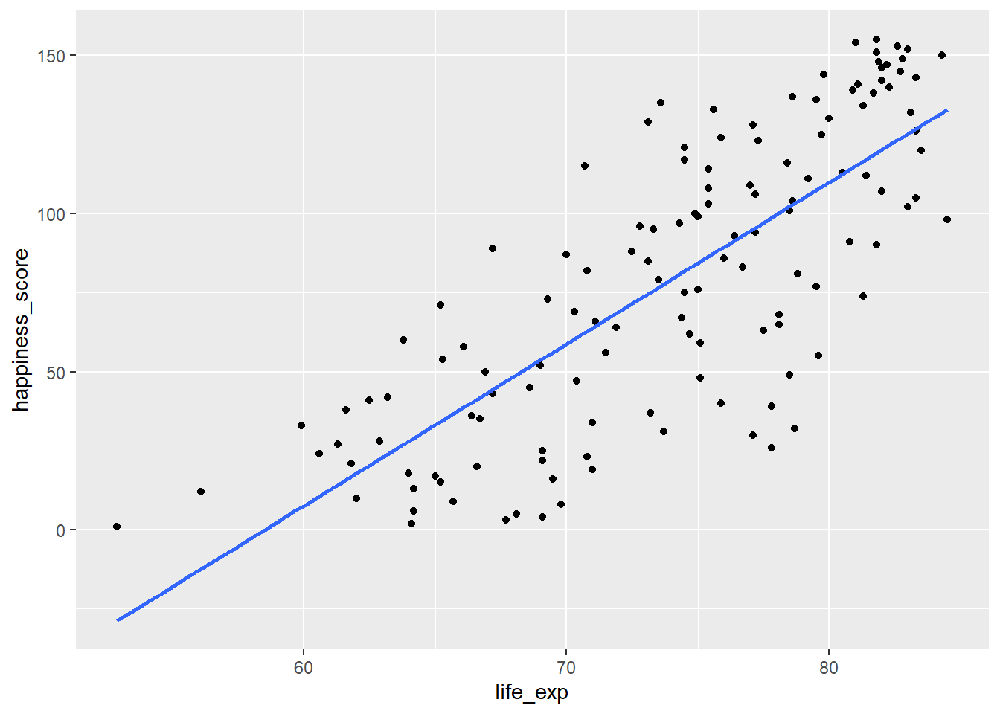
Calcule la correlación entre
life_expyhappiness_scorecor(world_happiness$life_exp, world_happiness$happiness_score)[1] 0.7737615
4.2 Abvertencias de correlación
Si bien la correlación es una forma útil de cuantificar las relaciones, existen algunas advertencias.
4.2.1 Relaciones no lineales
Considere estos datos
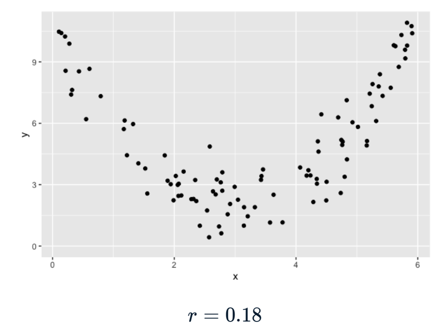
Claramente existe una relación entre \(x\) e \(y\), pero cuando calculamos la correlación, obtenemos 0.18.
Esto se debe a que la relación entre las dos variables es una relación cuadrática, no una lineal. El coeficiente de correlación mide la fuerza de las relaciones lineales y solo de las relaciones lineales.
Al igual que cualquier estadística de resumen, la correlación no debe usarse a ciegas y siempre debe visualizar sus datos cuando sea posible.
4.2.1.1 Datos de sueño de mamíferos
Volvamos a los datos de sueño de los mamiferos que discutimos en el capítulo 1.
library(ggplot2)
data("msleep")
head(msleep)# A tibble: 6 × 11
name genus vore order conservation sleep_total sleep_rem sleep_cycle awake
<chr> <chr> <chr> <chr> <chr> <dbl> <dbl> <dbl> <dbl>
1 Cheetah Acin… carni Carn… lc 12.1 NA NA 11.9
2 Owl mo… Aotus omni Prim… <NA> 17 1.8 NA 7
3 Mounta… Aplo… herbi Rode… nt 14.4 2.4 NA 9.6
4 Greate… Blar… omni Sori… lc 14.9 2.3 0.133 9.1
5 Cow Bos herbi Arti… domesticated 4 0.7 0.667 20
6 Three-… Brad… herbi Pilo… <NA> 14.4 2.2 0.767 9.6
# ℹ 2 more variables: brainwt <dbl>, bodywt <dbl>4.2.1.2 Peso corporal vs tiempo de actividad del día
Aquí hay un diagrama de dispersión del peso corporal de cada mamífero en comparación con el tiempo que pasan dspiertos cada día.
ggplot(msleep, aes(bodywt, awake)) +
geom_point()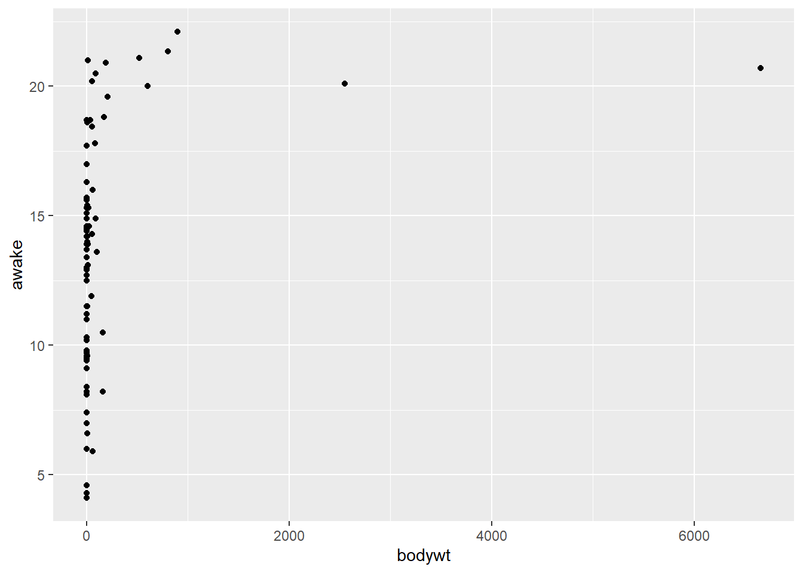
Es claro que la relación entre estas dos variables definitivamente no es lineal.
cor(msleep$bodywt, msleep$awake)[1] 0.3119801La correlación entre el peso corporal y el tiempo de vigilancia es solo de 0.3, que es una relación líneal débil.
4.2.1.3 Distribución del peso corporal
Si hechamos un vistazo más de cerca a la distribución del peso corporal, está muy sesgada.
ggplot(msleep, aes(bodywt)) +
geom_histogram()`stat_bin()` using `bins = 30`. Pick better value with `binwidth`.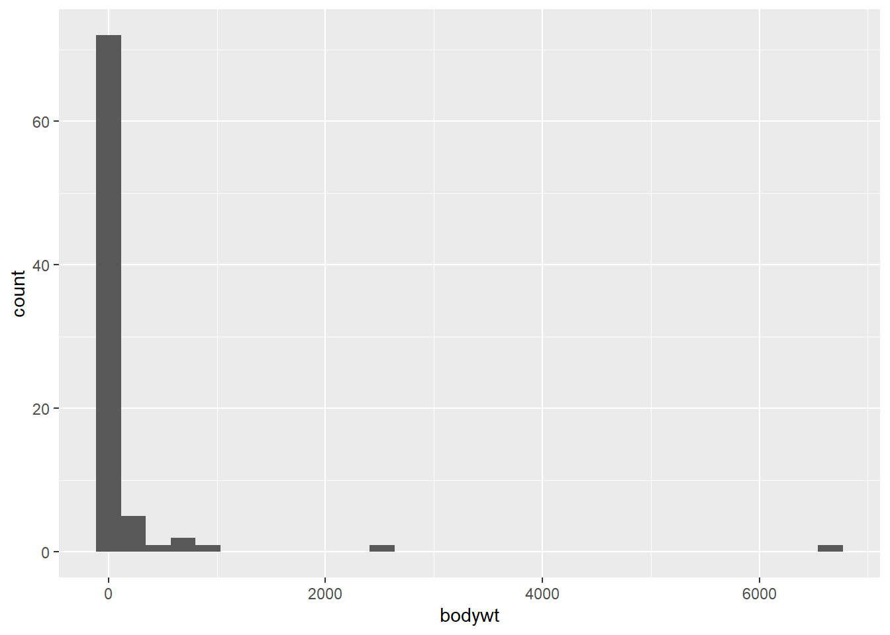
Hay muchos pesos más bajos y algunos pesos que son mucho más altos que el resto.
4.2.2 Transformación Log
Cuando los datos estan muy sesgados comoe estos, podemos aplicar una transformación log. Si trazamos el registro del peso corporal frente al tiempo de vigilia, la relación parece mucho más lineal que la que existe entre el peso corporal normal y el tiempo de vigilia.
library(tidyverse)
msleep <- msleep %>%
mutate(log_bodywt = log(bodywt))
ggplot(msleep, aes(log_bodywt, awake)) +
geom_point() +
geom_smooth(method = "lm", se = FALSE)`geom_smooth()` using formula = 'y ~ x'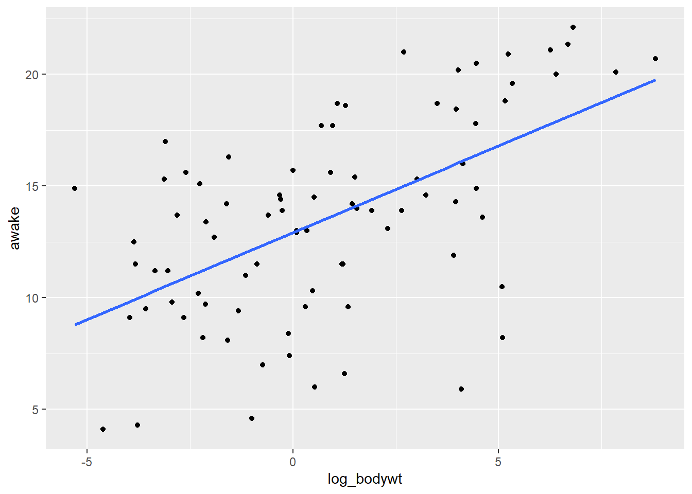
cor(msleep$log_bodywt, msleep$awake)[1] 0.5687943Note que la correlación entre el registro del pso corporal y el tiempo de vigilia es de aproximadamente 0.57, que es mucho mejor que el 0.3 que teniamos antes.
4.2.3 Otras Transformaciones
Además de las transformaciones log(x), hay muchas otras transformaciones que se pueden usar para hacer que una relación sea más lineal, como:
- Sacar la raíz cuadrada o el recíproco de una variable.
La elección de la transformación dependerá de los datos y de cuán sesgado estén. Estos se pueden aplicar en diferentes combinaciones a \(x\) e \(y\), por ejemplo, podría aplicar una transformación logarítmica tanto a \(x\) como a \(y\), o una transformación de raíz cuadrada a x y una trasnformación recíproca a \(y\).
4.2.3.1 ¿Por qué usar una transformación?
Entonces, ¿por qué usar una transformación? Ciertos métodos estadísticos se basan en variables que tienen una relación líneal, como calcular un coeficiente de correlación. La regresión líneal es otra técnica estadística que requiere que las variables se relacionen de manera líneal, sobre lo que puede aprender todo en este curso.
4.2.4 Correlación no implica causalidad
Hablemos de otra advertencia importante sobre la correlación de la que quizás haya oído hablar antes: la correlación no implica causalidad. Esto significa que si \(x\) e \(y\) están correlacionadas, \(x\) no necesariamente causa a \(y\).
Por ejemplo, aquí hay un gráfico de dispersión del consumo de margarina per cápita en los EE.UU. Cada año frente a la tasa de divorcio en el estado de Maine.
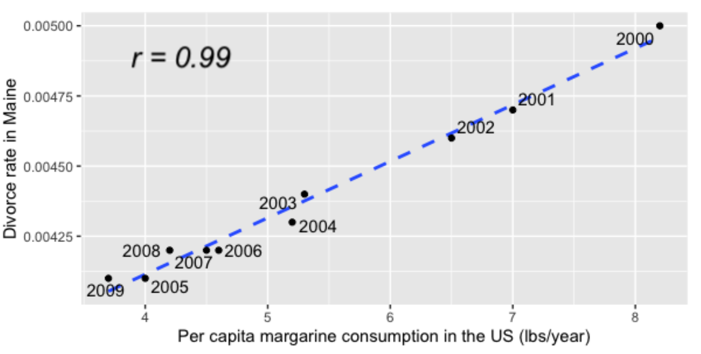
Vea que la correlación entre estas dos variables es 0.99, que es casi perfecta. Sin embargo, esto no significa que consumir más margarina provoque más divorcios. Este tipo de correlación a menudo se denomina correlación espuria.
4.2.5 Confusión
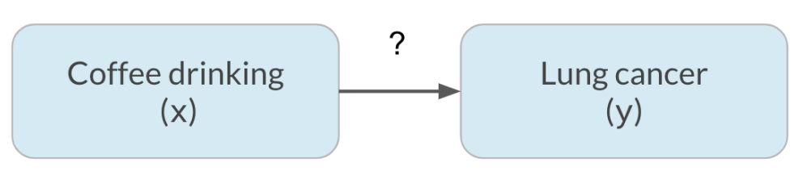
Un fenómeno llamado confusión puede dar lugar a correlaciones espurias. Digamos que queremos saber si beber café causa cáncer de pulmón. Al observar los datos, encontramos que el consumo de café y el cáncer de pulmón correlacionados, lo que puede llevarnos a pensar que beber más café le provocará cáncer de pulmón.
Sin embargo, hay una tercera variable oculta en juego, que es fumar.
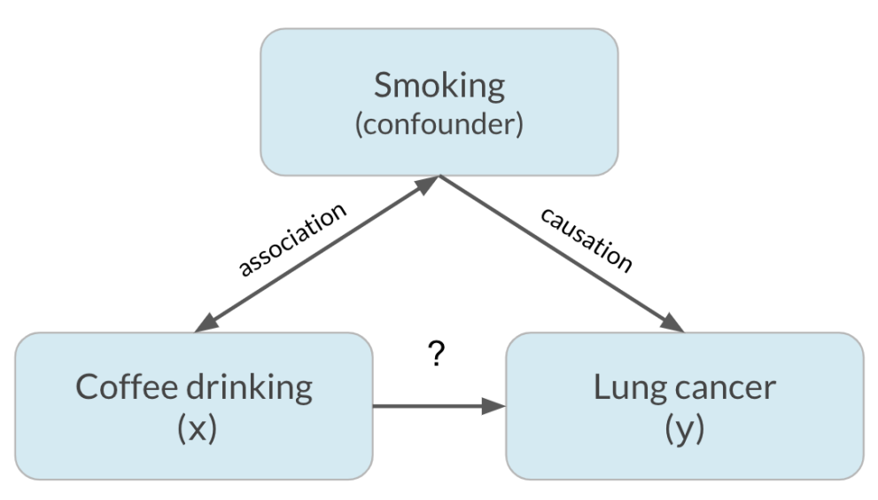
En realidad, resulta que el café no provoca cáncer de pulmón y solo está asociado a él, pero parecía causal por la tercera variable, el tabaquismo. Esta tercera variable se denomina factor de confusión o variable oculta. Esto significa que la relación de interés entre el café y el cáncer de pulmón es una correlación espuria.
Otro ejemplo de esto es la relación entre las ventas minoristas de vacaciones. Si bien puede ser que la gente compré más durante las festividades como una forma de celebración, es difícil saber cuánto del aumento de las ventas se debe a las festividades y cuánto se debe a las ofertas y promociones especiales que a menudo se realizan durante las festividades. 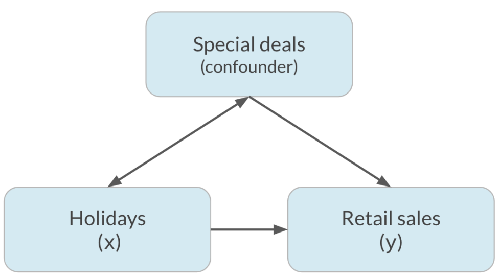
Aquí, las ofertas especiales confunden la relación entre las vacaciones y las ventas.
4.2.6 Ejemplo 21
Si bien el coeficiente de correlación es una forma conveniente de cuantificar la fuerza de una relación entre dos variables, está lejos de ser perfecto. En este ejercicio, explorará una de las advertencias del coeficiente de correlación al examinar la relación entre el PIB per cápita de un país (gdp_per_cap) y el puntaje de felicidad (world_happiness)
- Primero, creemos un diagrama de dispersión que muestre la relación entre
gdp_per_capita(en el eje x) ylife_exp(en el eje y)
world_happiness <- readRDS("world_happiness_sugar.rds")
ggplot(world_happiness, aes(gdp_per_cap, life_exp)) +
geom_point()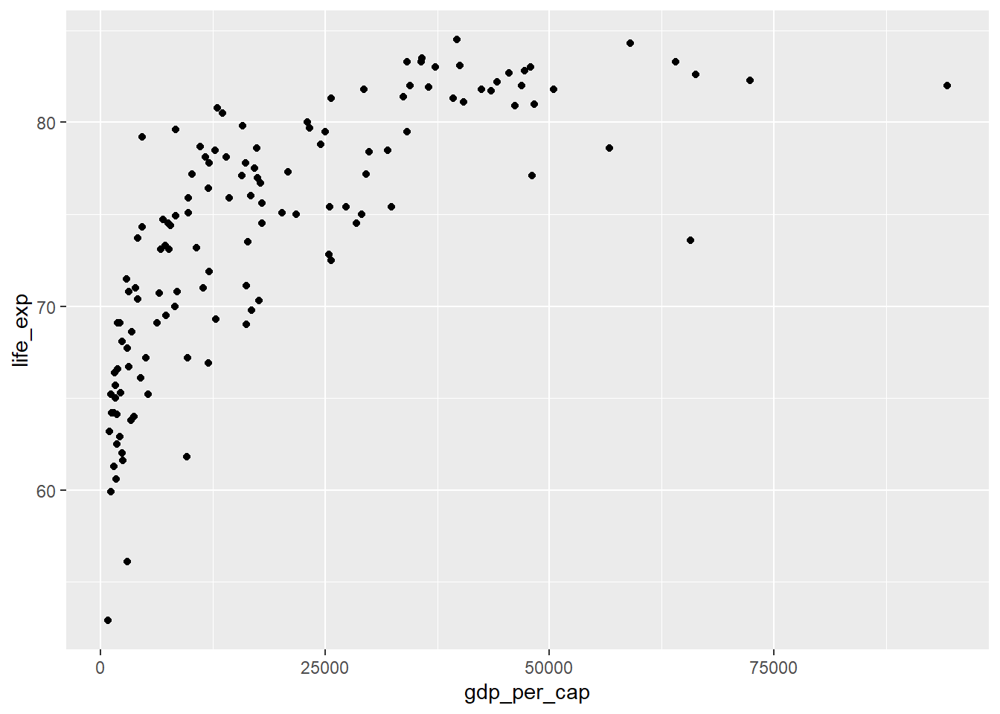
Ahora, calculemos la correlación entre
gdp_per_capylife_expcor(world_happiness$gdp_per_cap, world_happiness$life_exp)[1] 0.7235027La correlación entre el PIB per cápita y la esperanza de vida es de 0.7. ¿Por qué la correlación no es la mejor manera de medir la relación entre las dos variables?
Respuesta: La correlación solo mide las relaciones lineales.
4.2.7 Ejemplo 22
Cuando las variables tienen distribuciones sesgadas, a menudo requerimos una transformación para formar una relación lineal con otra variable para que se pueda calcular la correlación. En este ejercicio, usted mismo realizará una transformación.
Cree un diagrama de dispersión de
happiness_scorevsgdp_per_capy calcular la correlación estre estas variables.ggplot(world_happiness, aes(gdp_per_cap, happiness_score)) + geom_point()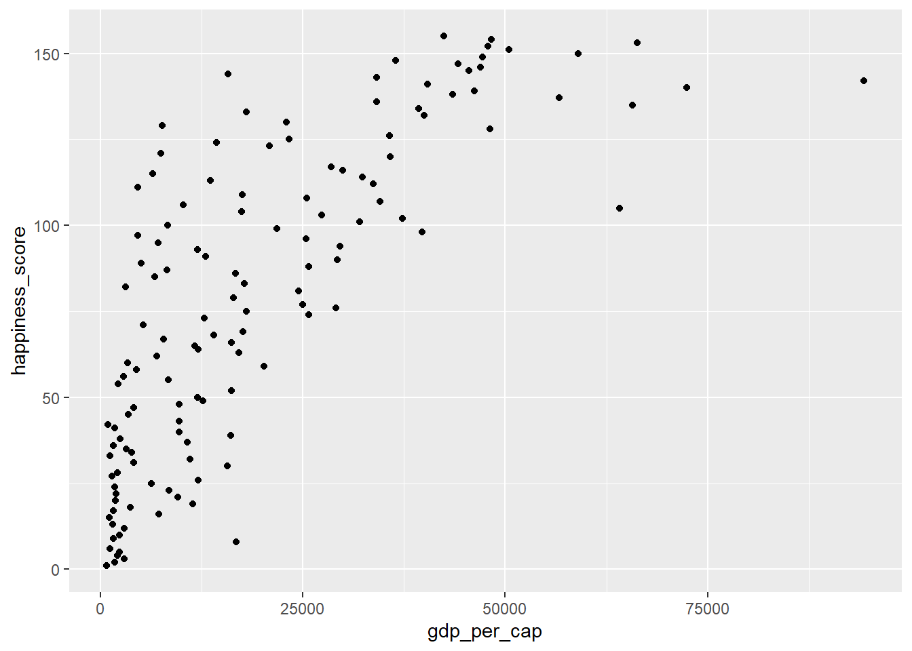
cor(world_happiness$gdp_per_cap, world_happiness$happiness_score)[1] 0.7601853Agregue una nueva columna a world_happiness llamada
log_gdp_per_capque contiene el registro degdp_per_cap. Cree un diagrama de dispersión dehappiness_scorevslog_gdp_per_capy calcule la correlación de estas variables.world_happiness <- world_happiness %>% mutate(log_gdp_per_cap = log(gdp_per_cap))ggplot(world_happiness, aes(log_gdp_per_cap, happiness_score)) + geom_point()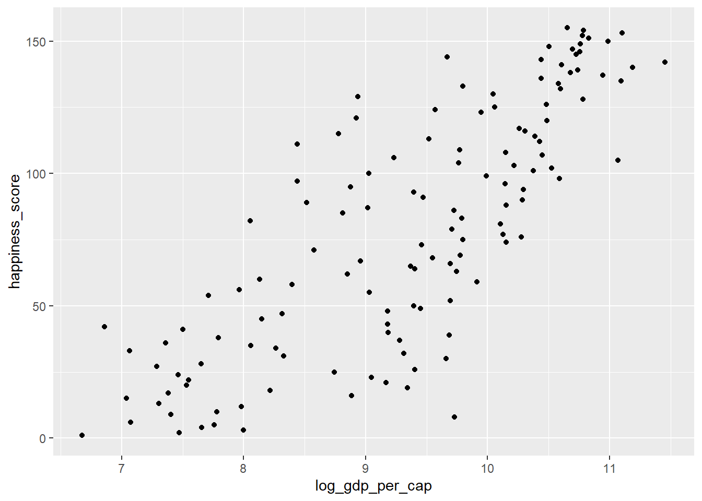
cor(world_happiness$happiness_score, world_happiness$log_gdp_per_cap)[1] 0.7965484
Tremenda tranformación! Note que la relación entre el PIB per cápita y la felicidad se volvio más lineal al aplicar una transformación logarítmica. Las transformaciones logarítmicas son excelentes para usar en variables con una distribución sesgada como el PIB.
4.3 Diseño de Expermientos
A menudo, los datos se crean como resultado de un estudio que tiene como objetivo responder a una pregunta específica. Sin embargo, los datos debe analizarse e interpretarse de manera diferente según cómo se generaron los datos y cómo se diseño el estudio.
4.3.1 Vocabulario
Los experimentos generalmente tienen como objetivo responder una pregunta en la forma:
- ¿Cuál es el efecto del tratamiento en la respuesta?
En este contexto, el tratamiento se refiere a la variable explicativa o independiente, y la respuesta se refiere a la respuesta o variable dependiente. Por ejemplo,
- ¿Cuál es el efecto de un anuncio en la cantidad de productos comprados?
En este caso, el tratamiento es un anuncio y la respuesta es la cantidad de productos comprados.
4.3.2 Experimentos controlados
En un experimento controlado, los participantes se asignan aleatoriamente al grupo de tratamiento o al grupo de control, donde el grupo de tratamiento recibe el tratamiento y el grupo de control no.
En nuestro ejemplo, el grupo de tratamiento verá un anuncio y el grupo de control no. Aparte de esta diferencia, los grupos deben ser comparables para que podamos determinar si ver un anuncio hace que las personas compren más. si los grupos no son comparables, esto podría generar confusión o sesgo.
Si la edad promedio de los participantes en el grupo de tratamiento es de 25 años y la edad promedio de los participantes en el grupo de control es de 50, la edad podría ser un posible factor de confusión si es más probable que las personas más jovenes compren más, y lesto hará que el experimento esté sesgado hacia el tratamiento.
4.3.3 El patrón oro de los experimentos
El estándar de oro, o experimento ideal, eliminará tanto sesgo como sea posible utilizando ciertas herramientas. La primera herramienta para ayudar a eliminar el sesgo en los experimentos controlados es utilizar un ensayo controlado aleatorio. En un ensayo controlado aleatorizado, los participantes se asignan al azar al grupo de tratamiento o de control y su asignación no se basa en nada más que en el azar.
La asignación aleatoria como esta ayuda a garantizar que los grupos sean comparables. La segunda forma es usar un placebo, que es algo que se parece al tratamiento, pero no tiene efecto. De esta manera, los participantes no saben si están en el grupo de tratamiento o de control. Esto asegura que el efecto del tratamiento se deba al tratamiento mismo, no a la idea de recibir el tratamiento. Esto es común en los ensayos clínicos que prueban la eficacia de un fármaco.
En un experimento doble ciego, la persona que administra el tratamiento o realiza el experimento tampoco sabe si está administrando el tratamiento real o el placebo. Esto protege contra el sesgo en la respuesta, así como el análisis de los resultados. Todas estas diferentes herramientas se reducen al mismo principio: si hay menos oportunidades e que l sesgo se infiltre en su experimento, con mayor confianza podrá concluir si el tratamiento afecta la respuesta.
4.3.4 Estudios Observacionales
El otro tipo de estudio que discutiremos es el estudio observacional. En un estudio observación, los participantes no se asignan aleatoriamente a los grupos. En cambio, los participantes se asignan a sí mismos, generalmente en función de características preexistentes. Esto es útil para responder preguntas que no conducen a un experimento controlado.
Si desea estudiar el efecto de fumar sobre el cáncer, no puede obligar a las personas a comenzar a fumar.
De manera similar, si desea estudiar cómo el comportamiento de compra anterior afecta si alguien comprará un producto, no puede obligar a las personas a tener cierto comportamiento de compra anterior. Debido a que la asignación no es aleatoria, no hay forma de garantizar que los grupos seas comparables en todos los aspectos, por lo que los estudios observacionales no pueden establecer causalidad, solo asociación.
Los efectos del tratamiento pueden confundirse con factores que llevaran a ciertas personas al grupo de control y a otras personas al grupo de tratamiento. Sin embargo, hay formas de controlar los factores de confusión, lo que puede ayudar a fortalecer la confiabilidad de las conclusiones sobre la asociación.
4.3.5 Estudios longitudinales vs transversales
La última distinción importante a hacer es entre estudios longitudinales y transversales.
En un estudio longitudinal, se sigue a los mismos participantes durante un período de tiempo para examinar el efecto del tratamiento en la respuesta.
En un estudio transversal, los datos se recopilan a partir de una única instantánea en el tiempo. Si queremos investigar el efecto de la edad sobre la estatura, un estudio transversal mediría las estaturas de personas de diferentes edades y las compararía. Sin embargo, los resultados se confundirán con el año de nacimiento y el estilo de vida, ya que es posible que cada generación sea más alta.
En un estidoo longitudinal, se registraría la estatura de las mismas personas en diferentes momentos de sus vidas, por lo que se elimina la confusión.
Es importante tener en cuenta que los estudios longitudinales son más caros y tardarán más en realzarse.